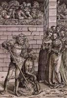

index
/
Русский
Портрет Богородицы
|
Сцены из жизни Богородицы
Богородица в окружении медальонов, представляющих семь радостей Богородицы
Лукас Кранах Старший
Портрет Богородицы
Сцены из жизни Богородицы
Лукас Кранах Старший

English
|
Русский
|
Українська


")
")